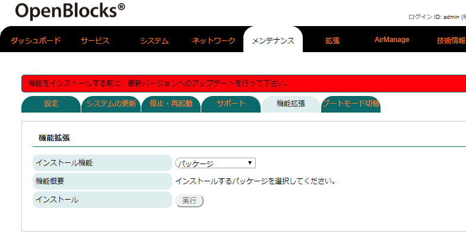
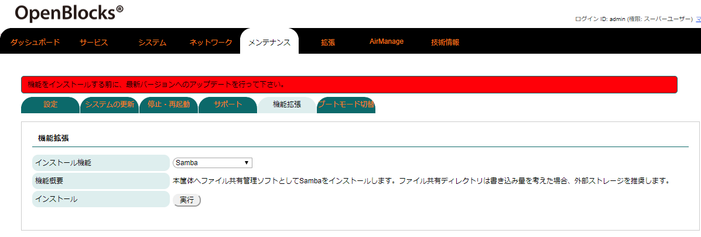
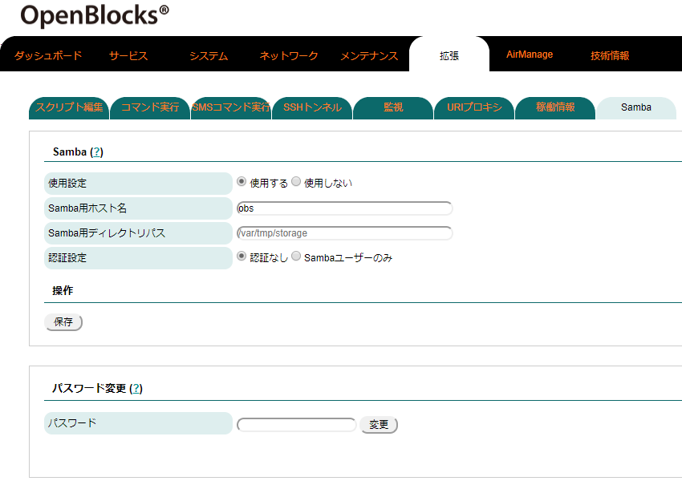
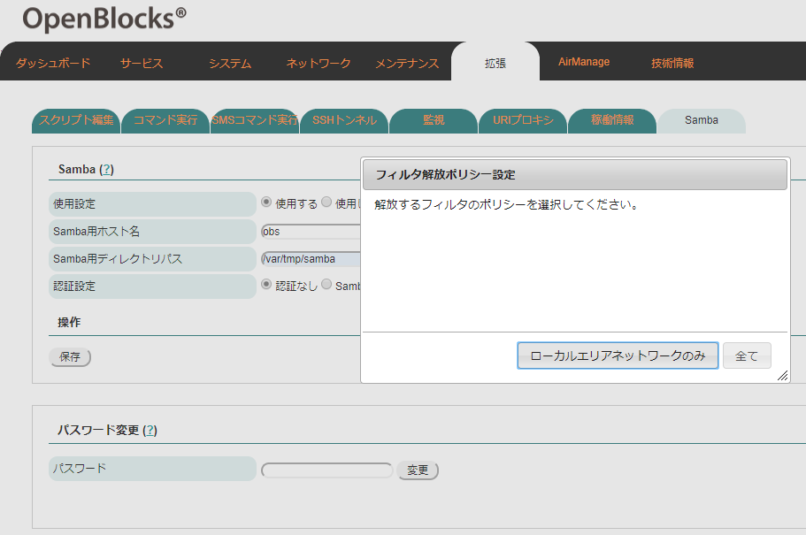
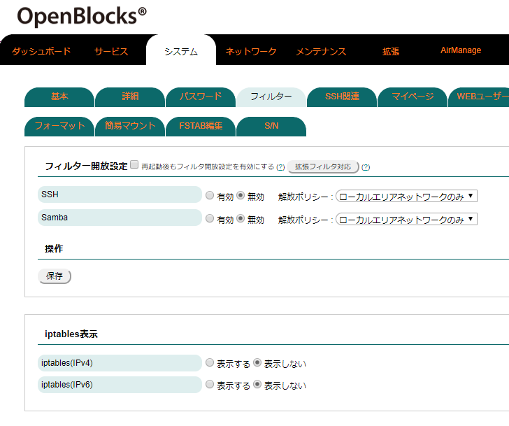

Samba設定¶
Sambaのインストール¶
本製品出荷時では、Sambaはインストールされておりません。そのため、WEB UIの「メンテナンス」→「機能拡張」タブからSambaをインストールしてください。

WEB UIの「メンテナンス」タブを選び、さらに「機能拡張」タブをクリックすると機能拡張用のパッケージを選択することができます。

インストール機能のリストから「Samba」を選択します。
その後、インストールの「実行」ボタンを押し、インストールを行ってください。
尚、インストール完了後には反映を行うため、本体再起動が必要となります。そのため、「メンテナンス」→「停止・再起動」から本製品の再起動を行ってください。
Samba起動設定¶
Sambaのインストールが完了している場合、サービスWEB UIの「拡張」→「Samba」タブにSambaの項目が表示されます。
使用設定を「使用する」に設定し、保存することでファイル共有用サーバーとして扱うことができます。
アクセス用にSamba用ユーザーとして"obssamba"を用意しております。デフォルトパスワードは"P1atDeb1an"です。セキュリティの観点上、パスワードは変更してください。

Samba |
|
|---|---|
項目 |
備考 |
使用設定 |
Sambaの使用設定を行います。Sambaを使用する場合には、「使用する」を選択してください。 |
Samba用ホスト名 |
同一ネットワーク内のWindowsPC等で表示する名前を設定します。 |
Samba用ディレクトリパス |
ファイル共有として扱うディレクトリパスを設定します。 |
認証設定 |
ファイル共有先にアクセスする場合の、セキュリティの設定を行います。 認証なし：共有先にアクセスする場合、認証は発生しません。 Sambaユーザーのみ：共有先にアクセスする場合、Samba用のユーザーのみアクセスできます。 ※Samba用ユーザーとしてobssambaを用意しています。 |
パスワード |
入力フォームに対して、パスワードを設定し変更ボタンを押すことで、Samba用ユーザー(obssamba) のパスワードが変更可能です。 |
設定完了後、保存ボタンを押すことによりSambaが起動・停止します。
尚、Samba機能を使用する状態にて、保存ボタンを押した場合にて、フィルターが解放されていない場合には、解放確認のポップアップが表示されます。また、解放ポリシー設定ポップアップが出ますので、設定したいポリシーのボタンを押してください。

尚、本機能での書き込み等についてはストレージ寿命を縮めることが想定されます。
そのため、ディレクトリパス先については外部ストレージやtmpfs等の本体ストレージに影響のない場所を推奨いたします。
Sambaパケットフィルタについて¶
Sambaのインストールが完了している場合、ファイル共有用のプロトコル通信の為、Sambaのフィルターを開放する必要があります。そのため、WEB UIの「システム」→「フィルター」タブにてフィルターを開放してください。

デフォルトではSamba用のアクセスはできないようにフィルターが適用されています。
"有効"に設定し、保存ボタンを押してください。